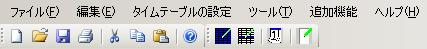

- メイン画面の機能について

- メニュー
- ファイル
- 新規作成
タイムテーブルを新たに作成します。
- 開く
作成済みのタイムテーブルを開きます。
- 上書き保存
現在編集中のタイムテーブルを保存します。
- 名前を付けて保存
現在編集中のタイムテーブルを新しいファイルに保存します。
- 印刷
現在編集中のタイムテーブルを印刷します。
- 印刷プレビュー
印刷プレビューダイアログを表示します。
- 最近使用したファイル
最近使用したファイルの一覧を表示します。
- 終了
このプログラムを終了します。
- 編集
- 切り取り
現在選択中の行の切り取りを行います。
- コピー
現在作業中の行をコピーします。
- 貼り付け
切り取りまたはコピーした行を現在の行に貼り付けます。
- 行クリア
現在作業中の行をクリアします。
- タイムテーブルの設定
- 表示範囲を自動設定
現在カレンダー部分に表示している期間を自動設定します。（自動設定の詳細）
- 選択範囲を自動設定
現在選択している部分の期間を自動設定します。（自動設定の詳細） - 表示期間
表示範囲の指定ダイアログを表示します。
- タイムテーブルの設定
タイムテーブルの設定ダイアログを表示します。
- ツール
- オプション
オプション設定ダイアログを表示します。
- ヘルプ
- 内容
- インデックス
- 検索
- バージョン情報
- ツールバー
- 全般
- 新規作成
- 開く
- 上書き保存
- 印刷
- 切り取り
- コピー
- 貼り付け
- ヘルプ
- その他
- 表示範囲を自動設定
- 選択範囲を自動設定
- 表示期間
- 設定